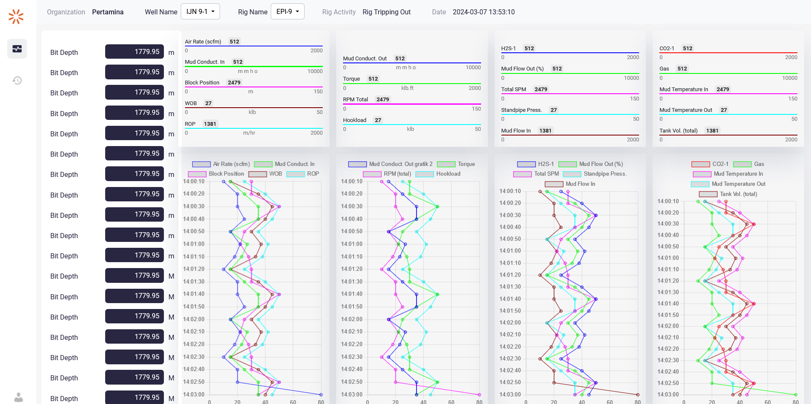

Monitoring Project Overview

The Drilling Project was a comprehensive effort where I served as a backend developer. The project aimed to develop a robust system for managing drilling operations and data. My responsibilities included developing the backend using Laravel, creating an efficient and user-friendly admin panel, and ensuring seamless integration with the frontend.
- Developed a responsive and user-friendly API for real-time data retrieval from drilling equipment.
- Implemented intricate backend logic to handle various aspects of drilling operations and data management.
- Ensured the security and integrity of data through robust validation and authentication protocols.
- Optimized database queries to enhance the performance and efficiency of data retrieval processes.
- Collaborated closely with frontend developers to seamlessly integrate backend functionalities into the user interface.